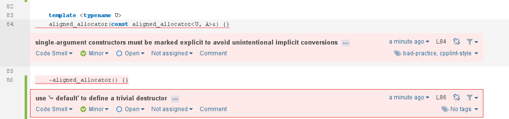

Use clang-tidy for static analysis and integration in Sonarqube
clang-tidy is an extensive linter C++. It provides a complete framework for analysis of C++ code. Some of the checks are very simple but some of them are very complete and most of the checks from the clang-static-analyzer are integrated into clang-tidy.
Usage
If you want to see the list of checks available on clang-tidy, you can use the list-checks options:
You can then choose the tests you are interested in and perform an analysis of your code. For, it is highly recommended to use a Clang compilation database, you can have a look at Bear to generate this compilation database if you don't have it yet. The usage of clang-tidy, is pretty simple, you set the list of checks you want, the header on which you want to have warnings reported and the list of source files to analyse:
You'll very likely see a lot of warnings. And you will very likely see a lot of false positives and a lot of warnings you don't agree too. For insance, there are a lot of warnings from the CPP Core Guidelines and the Google Guidelines that I don't follow in my coding. You should not take the complete list of tests as rule, you should devise your own list of what you really want to fix in your code. If you want to disable one check X, you can use the - operation:
You can also enable the checks one by one or parts of them with *:
One problem with the clang-tidy tool is that it is utterly slow, especially if you enable the clang-static-analyzer checks. Moreover, if you use it like it is set before, it will only use one thread for the complete set of files. This may not be an issue on small projects, but this will definitely be a big issue for large projects and template-heavy code (like my ETL project). You could create an implicit target into your Makefile to use it on each file independently and then use the -j option of make to make them in parallel, but it not really practical.
For this, I just discovered that clang propose a Python script, run-clang-tidy.py that does it all for us! On Gentoo, it is installed at /usr/share/run-clang-tidy.py.
This will automatically run clang-tidy on each file from the compilation database and use 9 threads to perform the checks. This is definitely much faster. For me, this is the best way to run clang-tidy.
One small point I don't like is that the script always print the list of enabled checks. For, this I changed this line in the script:
with:
This makes it more quiet.
One thing I didn't mention is that clang-tidy is able to fix some of the errors directly if you use the -fix option. Personally, I don't like this, but for a large code base and a carefully selected set of checks, this could be really useful. Note that not all the checks are automatically fixable by clang-tidy.
Results
I have run clang-tidy on my cpp-utils library and here some interesting results. I have not run all the checks, here is the command I used:
/usr/share/clang/run-clang-tidy.py -p . -header-filter '^include/cpp_utils' -checks='cert-*,cppcoreguidelines-*,google-*,llvm-*,misc-*,modernize-*,performance-*,readility-*,-cppcoreguidelines-pro-type-reinterpret-cast,-cppcoreguidelines-pro-bounds-pointer-arithmetic,-google-readability-namespace-comments,-llvm-namespace-comment,-llvm-include-order,-google-runtime-references' -j9 2>/dev/null | /usr/bin/zgrep -v "^clang-tidy"
Let's go over some warnings I got:
include/cpp_utils/assert.hpp:91:103: warning: consider replacing 'long' with 'int64' [google-runtime-int] void assertion_failed_msg(const CharT* expr, const char* msg, const char* function, const char* file, long line) { ^
I got this one several times. It is indeed more portable to use int64 rather than long.
include/cpp_utils/aligned_allocator.hpp:53:9: warning: use 'using' instead of 'typedef' [modernize-use-using] typedef aligned_allocator<U, A> other; ^
This one is part of the modernize checks, indicating that one should use
using rather than a typedef and I completely agree.
include/cpp_utils/aligned_allocator.hpp:79:5: warning: use '= default' to define a trivial default constructor [modernize-use-default] aligned_allocator() {} ^ = default;
Another one from the modernize checks that I really like. This is completely true.
I don't agree that every constructor with one argument should be explicit, sometimes you want implicit conversion. Nevertheless, this particular case is very interesting since it is variadic, it can have one template argument and as thus it can be implicitly converted from anything, which is pretty bad I think.
test/array_wrapper.cpp:15:18: warning: C-style casts are discouraged; use reinterpret_cast [google-readability-casting] float* mem = (float*) malloc(sizeof(float) * 8); ^ reinterpret_cast<float*>( )
On this one, I completely agree, C-style casts should be avoided and much clearer C++ style casts should be preferred.
/home/wichtounet/dev/cpp_utils_test/include/cpp_utils/aligned_allocator.hpp:126:19: warning: thrown exception type is not nothrow copy constructible [cert-err60-cpp] throw std::length_error("aligned_allocator<T>::allocate() - Integer overflow."); ^
This is one of the checks I don't agree with. Even though it makes sense to prefer exception that are nothrow copy constructible, they should be caught by const reference anyway. Moreover, this is here an exception from the standard library.
/home/wichtounet/dev/cpp_utils_test/include/cpp_utils/aligned_allocator.hpp:141:40: warning: do not use const_cast [cppcoreguidelines-pro-type-const-cast] free((reinterpret_cast<void**>(const_cast<std::remove_const_t<T>*>(ptr)))[-1]); ^
In general, I agree that using const_cast should be avoided as much as possible. But there are some cases where they make sense. In this particular case, I don't modify the object itself but some memory before the object that is unrelated and I initialize myself.
I also had a few false positives, but overall nothing too bad. I'm quite satisfied with the quality of the results. I'll fix these warnings in the coming week.
Integration in Sonarqube
The sonar-cxx plugin just integrated support for clang-tidy in main. You need to build the version yourself, the 0.9.8-SNAPSHOT version. You then can use something like this in your sonar-project.properties file:
and sonar-cxx will parse the results and integrate the issues in your sonar report.
Here is an example:
You can see two of the warnings from clang-tidy :)
For now, I haven't integrate this in my Continuous Integration system because I'm still having issues with clang-tidy and the compilation database. Because the compilation contains absolute paths to the file and to the current directory, it cannot be shared directly between servers. I have to find a way to fix that so that clang-tidy can use on the other computer. I'll probably wait till the sonar-cxx 0.9.8 version is released before integrating all this in Sonarqube, but this is a great news for this plugin :)
Conclusion
clang-tidy is C++ linter that can analyze your code and checks for hundreds of problems in it. With it, I have found some very interesting problems in the code of my cpp_utils library. Moreover, you can now integrate it Sonarqube by using the sonar-cxx plugin. Since it is a bit slow, I'll probably not integrate it in my bigger projects, but I'll integrate at least in the cpp_utils library when sonar-cxx 0.9.8 will be released.
Comments
Comments powered by Disqus